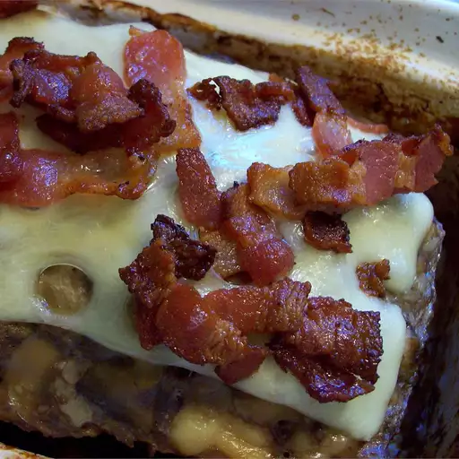

Bacon Mushroom Swiss Meatloaf

This meatloaf is full of flavor, and a delicious twist on an old favorite. Bacon, onions, mushrooms, and Swiss cheese are added to ground beef and baked to perfection.
Ingredients
- 12 ounces chopped raw bacon
- 1 small white onion, chopped
- 5 button mushrooms, chopped
- 1 ½ pounds extra-lean ground beef
- 1 egg
- ¼ cup evaporated milk
- 6 ounces shredded Swiss cheese, divided
- ½ cup corn flake crumbs
Instructions
- Preheat oven to 350 degrees F (175 degrees C).
- Place bacon in a skillet and cook over medium heat until the pieces are browned. Remove with a slotted spoon to paper towels. Discard all but 1 tablespoon of bacon grease. Stir in onions and mushrooms, and cook until soft. Remove from heat.
- In a large bowl, stir together beef, egg, and milk. Stir in the onion and mushrooms. Mix in about 4 ounces of Swiss cheese, and all but 1 tablespoon of bacon. Stir in cornflake crumbs, and mix until well blended. Shape into a loaf, and place in a meatloaf pan.
- Bake in a preheated oven for 1 hour. Drain fat, and sprinkle with remaining cheese and bacon. Return to oven, and bake until cheese is melted, about 5 minutes.